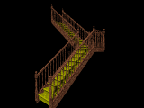
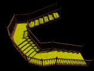
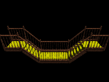
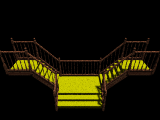
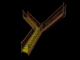

The StairCase Macro adds segments of straight staircases to a scene (and flat landings). The StairCase_Spiral Macro adds segments of spiral staircase to a scene. The component parts of the staircase can all be controlled/replaced to produce a staircase of your own design.
The are contained in a single 'include' file called 'staircase.inc' which incorporates:
A zip file containing the latest version of this include file, numerous examples and this documentation can be downloaded from the POV-Ray Object Collection (Search for 'StairCase'). You should unzip these files to a location of your choice. To confirm that the download was successful you should test the StairCase Macros by opening one of the 'staircase_example' scene files in POV-Ray and rendering it. You should see a simple example of a staircase, though some of the later examples are more complex and may take a couple of minutes to render.
To make the StairCase Macro include file available to any scene file you render using POV-Ray, copy the include file into your standard POV-Ray include directory (alternatively you can simply add a copy into the directory containing your scene).
You can incorporate the StairCase Macros into code that you subsequently re-distribute by simply including the 'staircase.inc' file in your distribution (along with any additional optional files you may have that define non-default components).
By wrapping the StairCase macro call in an 'object' definition you can treat it as a standard POV-Ray object. The following example adds a staircase to the scene and scales it by a factor of 5.
To specify the path the staircase should follow you need to set the 3D coordinates of the bottoms of each newel post (the posts supporting the ends of the handrail). You are also likely to need to set the width of the stairs. the StairCase Macro draws newel posts at the positions you specify, joins them together with banister rails and a stringers and draws treads and risers off at right angles to the banister rails. It adds a second banister rail on the opposite side of the stairs and a parallelogram shaped landings to transition the flooring around the corners. Finally you can decide whether to carpet the stairs and whether the carpet should span the full width of the stairs or leave the edges bare.
There are about 50 different control variables that you can set to tailor the stairs to your needs, but that shouldn't put you off because all of them have sensible defaults, so it should be easy to generate a staircase straight away. If you run the StairCase macro without changing anything, you get a staircase with three flights of stairs starting at the origin and rising up a total of about 3 POV-Ray units at a scale where 1 POV-Ray unit = 1 Metre. You can assign the output of the StairCase Macros to a variable or wrap it in an object definition so that you can transform it to be any scale you want.
The StairCase Macro control variables are all specified with units of 1 POV-Ray unit = 1 Metre.
All of the StairCase Macro control variables and macro names start with the prefix 'StairCase_' so as to reduce the likelihood that these names will conflict with variable names that you have used elsewhere in your scene file.
The most important control variable uses an array to specify a sequence of coordinates for the positions of the newel posts. This is the 'StairCase_PostPositions' variable.
|
#include "staircase.inc"
In this example, the StairCase_Positions variable is defined as an array containing 3 sets of coordinates which will result in the generation of 2 flights of stairs joined by a small landing:
#declare StairCase_PostPositions = array [3] {<0,0,0>,<0,2,2.5>,<-2.5,4,2.5>}; StairCase()
|  | |
If you specify adjacent newel post positions that have the same 'y' value, the StairCase Macros adds more level sections of landing as the following example illustrates:
|
camera {location <-6,5.2,2> look_at <0,0,1.2>}
In this example the StairCase_Positions variable is defined as an array containing 6 sets of coordinates:
#include "staircase.inc" #declare StairCase_StairWidth = 1.5; #declare StairCase_StairCarpetWidth = 1.2; #declare StairCase_PostPositions = array [6] {<0,2,0>,<0,1,3>,<-1,1,3>,<-2,0,2>,<-2,0,1>,<-2,-1,-2>}; StairCase()
This example also illustrates the use of the StairCase_StairWidth and StairCase_StairCarpetWidth control variables to specify a stair width of 1.5 units and a carpet width of 1.2 units, leaving a bare section of timber on either side of the carpet. |  | |
Stairs can clearly go up or down. The following example illustrates the definition for a set of stairs that changes direction. It is normal to have a level section between any such change.
|
camera {location <0,3,-5> look_at <0,0,0>}
In this example the StairCase_Positions variable is defined as an array containing 6 sets of coordinates:
#include "staircase.inc" #declare StairCase_PostPositions = array [6] {<-3,0,0>,<-2,0,0>,<-1,-1,0>,<1,-1,0>,<2,0,0>,<3,0,0>}; StairCase()
|  | |
There are various ways to provide an opening in the banister rail in the middle. The following example illustrates one approach.
|
camera {location <0,3,-5> look_at <0,0,0>}
The StairCase_Positions variable is redefined between successive StairCase macro calls:
#include "staircase.inc" #declare StairCase_PairedBanisterOn = 0; #declare StairCase_PostPositions = array [6] {<-3,0,0>,<-2,0,0>,<-1,-1,0>,<1,-1,0>,<2,0,0>,<3,0,0>}; StairCase()
#declare StairCase_PairedBanisterOn = 1;
#declare StairCase_PostPositions = array [3] {<1,-1,0>,<2,0,0>,<3,0,0>};
#declare StairCase_MainBanisterOn = 1;
|  | |
The following example creates three separate flights of stairs with no landing in between.
|
#include "staircase.inc"
#declare StairCase_PostPositions = array [2] {<0,0,0>,<0,2,2.5>}; StairCase() #declare StairCase_PostPositions = array [2] {<0,2,2.5>,<-2.5,4,2.5>}; StairCase() #declare StairCase_PostPositions = array [2] {<0,2,2.5>,< 2.5,4,2.5>}; StairCase() |  | |
The positions specified don't have to define flights of stairs that are at right angles to one another. the StairCase Macros calculates the coordinates of the landing in one of two ways depending upon the amount through which the staircase needs to turn at that landing. If it turns through an angle that is greater than the setting of StairCase_LandingThreshold then it adds a fourth newel post and calculates a parallelogram. Otherwise it uses the existing 3 newel posts to define a triangular landing. This works fairly well, but may not provide the level of control that you need. If the automatically generated landings are not satisfactory, simply split the staircase into multiple sections and code landings of your own in your scene file.